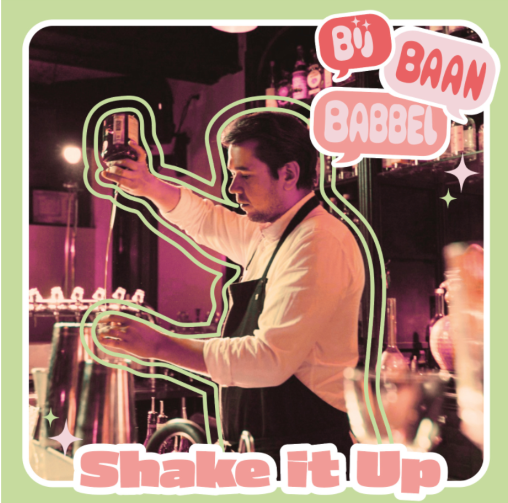

homepagina

Welkom bij Bijbaanbabbel!
Zit je vast in een saaie bijbaan waar je elke dag tegenop ziet? Wij ook! Daarom gaan wij je helpen om the best job ever te vinden, of in iedere geval niet zo vreselijk als de baan die je nu hebt. In onze podcast BijbaanBabbel duiken we elke week in de wereld van bijbaantjes, van drinken op werk tot werken op Schiphol. We lopen elke keer mee met een van onze experts in het bijbaantjes vak, delen onze ervaringen, geven inside information en proberen natuurlijk de beste recensies van klanten binnen te krijgen Let’s get this job hunt started! 💼✨